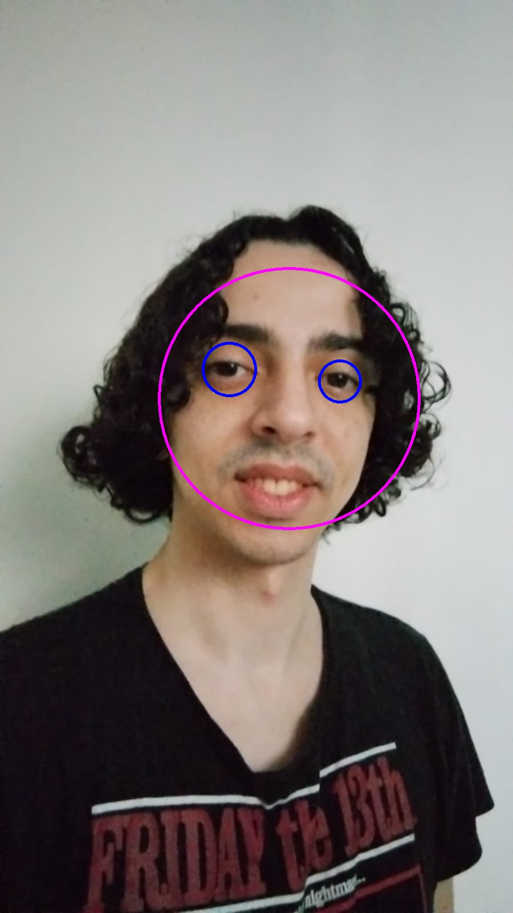
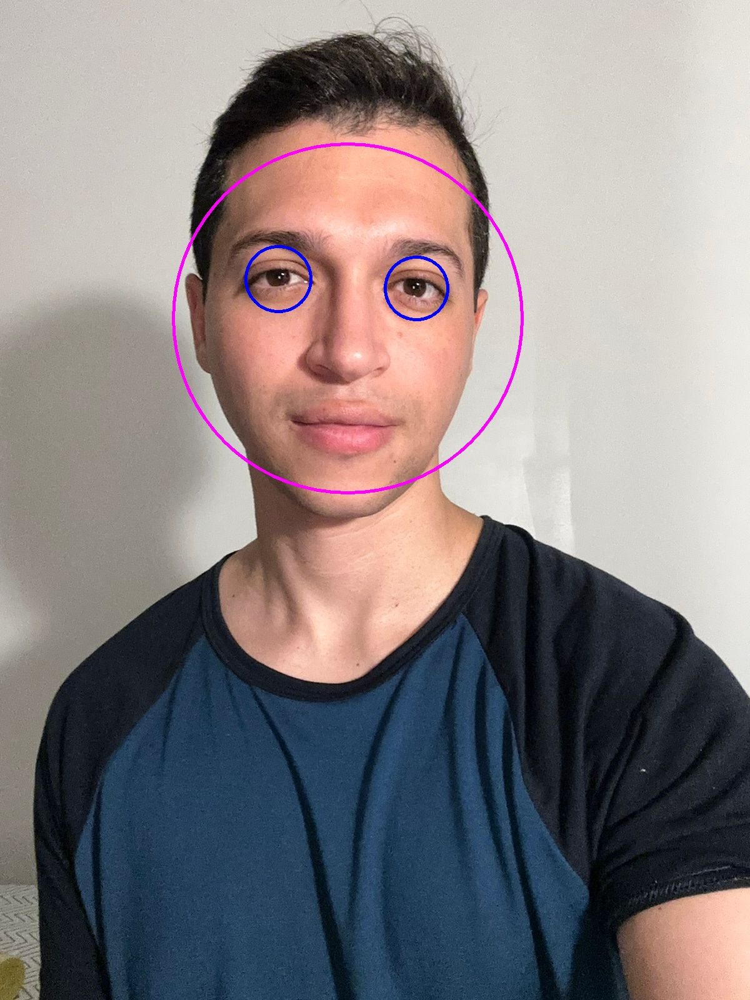
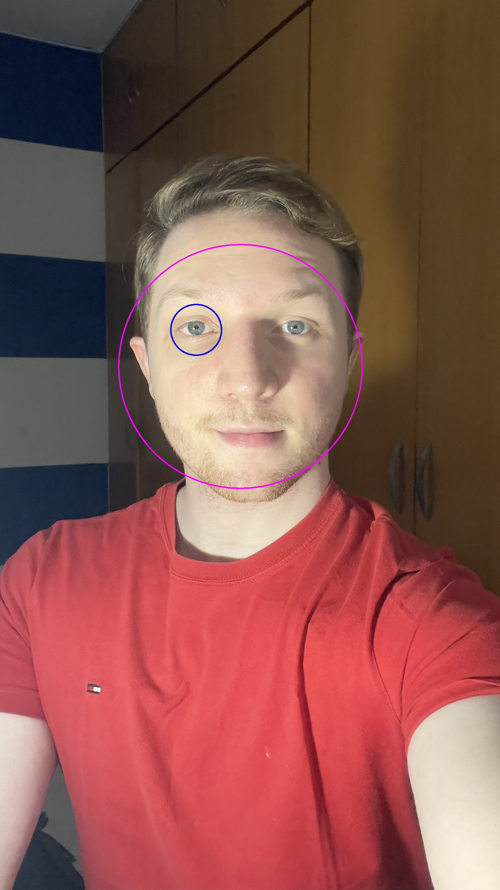

Relatório 07 - Detecção de Objetos
Introdução
Este relatório aborda o processo de detecção facial e ocular em imagens utilizando o algoritmo Haar Cascade, implementado com a biblioteca OpenCV. A abordagem baseia-se em identificar rostos e olhos em imagens pré-carregadas e vídeos capturados pela webcam. Duas imagens processadas foram analisadas, além do código utilizado para o reconhecimento, demonstrando os resultados obtidos.
Detecção de Rosto - Imagens de Pessoas
As imagens fornecidas foram processadas usando o algoritmo Haar Cascade. Este método utiliza classificadores treinados para identificar características faciais, como contornos de rostos e olhos.
Descrição do código
- O código processa imagens através da conversão para escala de cinza e aplicação de equalização de histograma para melhorar a qualidade do contraste.
- Os classificadores Haar Cascade "haarcascade_frontalface_default.xml" e "haarcascade_eye_tree_eyeglasses.xml" são carregados para identificar rostos e olhos, respectivamente.
- Cada rosto detectado é destacado por uma elipse rosa, enquanto os olhos são circulados em azul.
Resultados
Detecção do rosto do Kelvin
Detecção do rosto do Marlon
Detecção do rosto do Kelvin
Os rostos foram identificados e destacados por uma elipse rosa, enquanto os olhos foram detectados corretamente e destacados por círculos azuis.
As detecções demonstram boa precisão e adequação ao cenário, com os elementos destacados nitidamente.
Detecção de Rosto - Por webcam
O código foi projetado para ser adaptável a uma entrada de vídeo em tempo real, como uma webcam. Esse recurso oferece:
- Identificação em tempo real de rostos e olhos, útil para aplicações interativas como reconhecimento facial.
- Exibição imediata dos resultados processados.
- A possibilidade de salvar os frames processados como imagens, caso necessário.
Imagem obtida da webcam
A captura obtida da webcam evidencia bem o elipse rosa e os círculos azuis capturados em tempo real na webcam.